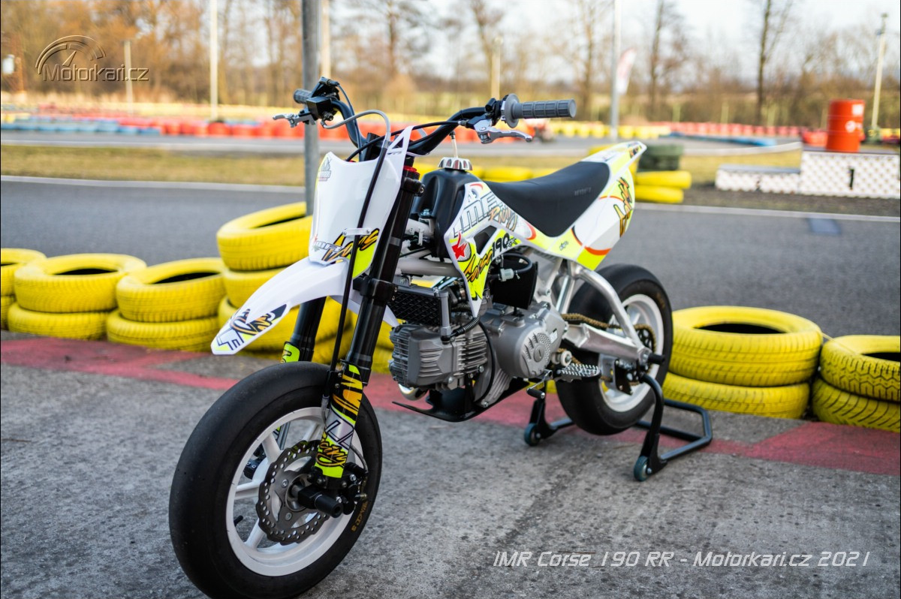

KeHi Motorsport • Garage
OUR BIKES
The motorcycles that have been part of Matěj Kerl's MotoGymkhana development, racing and competition journey.
IMR Corsa 190RR
KeHi Motorsport • Retired Bike
IMR 190RR
The former race bike of Matěj Kerl, built around a compact 190 cc Zongshen engine and previously used for MotoGymkhana and track riding.

THE MACHINE
IMR Corsa 190RR
The IMR Corsa 190RR is a lightweight pit-bike based race machine that was used by Matěj Kerl for MotoGymkhana and track riding.
The compact chassis and relatively small dimensions made the bike well suited to tight technical courses where rapid direction changes and precise control are important.
The IMR has now been retired from active competition following its time as Matěj's race machine.
Former Race Bike
MotoGymkhana
Track Riding
POWER UNIT
Engine
CHASSIS
Hardware
MATĚJ KERL • RETIRED BIKE
Former Configuration
Mitas S Racer 2.0
Tyre setup used during the bike's active racing period.
MotoGymkhana
Used for tight courses, fast transitions, braking and precise bike control.
Matěj Kerl
KeHi Motorsport rider and MotoGymkhana competitor.
COMPETITION
Race History
The IMR Corsa 190RR formed part of Matěj Kerl's development as a MotoGymkhana rider before being retired from active use.
View Results →KTM Freeride E "Tramvaj"
KeHi Motorsport • Active Bike
KTM FREERIDE E
A 2015 KTM Freeride E used by Matěj Kerl for MotoGymkhana training and competition. Nicknamed "Tramvaj".

THE MACHINE
Freeride E
The 2015 KTM Freeride E is Matěj Kerl's current electric MotoGymkhana bike, nicknamed "Tramvaj".
The electric drivetrain delivers immediate torque, making the bike particularly effective on tight technical courses where rapid acceleration and precise control are important.
The bike is being developed around Matěj's MotoGymkhana riding style and competition goals.
MotoGymkhana
Training
Competition
POWER UNIT
Electric Drive
CHASSIS
Hardware
MATĚJ KERL • CURRENT BIKE
Current Configuration
KTM Freeride E
2015 electric Freeride E used as Matěj Kerl's current MotoGymkhana bike.
Duke 690 Forks
Front-end upgraded with forks from the KTM Duke 690.
MotoGymkhana
Built around tight courses, rapid transitions, braking and precise bike control.
KEHI MOTORSPORT • DEVELOPMENT
Built For The Rider
The Freeride E is being developed as a dedicated MotoGymkhana machine, with further setup and battery work planned around Matěj Kerl's riding style and competition requirements.
COMPETITION
How It Performs
Track the results and progress achieved with the Freeride E in MotoGymkhana.
View Results →